Lecture 6
Introduction
- So far, we’ve discussed how to build simple web pages using HTML and CSS, and how to use Git and GitHub in order to keep track of changes to our code and collaborate with others. We also familiarized ourselves with the Python programming language, started using Django to create web applications, and learned how to use Django models to store information in our sites. We then introduced JavaScript and learned how to use it to make web pages more interactive.
- Today, we’ll discuss common paradigms in User Interface design, using JavaScript and CSS to make our sites even more user friendly.
User Interfaces
A User Interface is how visitors to a web page interact with that page. Our goal as web developers is to make these interactions as pleasant as possible for the user, and there are many methods we can use to do this.
Single Page Applications
Previously, if we wanted a website with multiple pages, we would accomplish that using different routes in our Django application. Now, we have the ability to load just a single page and then use JavaScript to manipulate the DOM. One major advantage of doing this is that we only need to modify the part of the page that is actually changing. For example, if we have a Nav Bar that doesn’t change based on your current page, we wouldn’t want to have to re-render that Nav Bar every time we switch to a new part of the page.
Let’s look at an example of how we could simulate page switching in JavaScript:
<!DOCTYPE html>
<html lang="en">
<head>
<title>Single Page</title>
<style>
div {
display: none;
}
</style>
<script src="singlepage.js"></script>
</head>
<body>
<button data-page="page1">Page 1</button>
<button data-page="page2">Page 2</button>
<button data-page="page3">Page 3</button>
<div id="page1">
<h1>This is page 1</h1>
</div>
<div id="page2">
<h1>This is page 2</h1>
</div>
<div id="page3">
<h1>This is page 3</h1>
</div>
</body>
</html>
Notice in the HTML above that we have three buttons and three divs. At the moment, the divs contain only a small bit of text, but we could imagine each div containing the contents of one page on our site. Now, we’ll add some JavaScript that allows us to use the buttons to toggle between pages.
// Shows one page and hides the other two
function showPage(page) {
// Hide all of the divs:
document.querySelectorAll('div').forEach(div => {
div.style.display = 'none';
});
// Show the div provided in the argument
document.querySelector(`#${page}`).style.display = 'block';
}
// Wait for page to loaded:
document.addEventListener('DOMContentLoaded', function() {
// Select all buttons
document.querySelectorAll('button').forEach(button => {
// When a button is clicked, switch to that page
button.onclick = function() {
showPage(this.dataset.page);
}
})
});
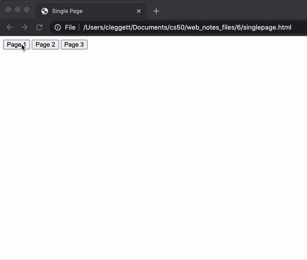
In many cases, it will be inefficient to load the entire contents of every page when we first visit a site, so we will need to use a server to access new data. For example, when you visit a news site, it would take far too long for the site to load if it had to load every single article it has available when you first visit the page. We can avoid this problem using a strategy similar to the one we used while loading currency exchange rates in the previous lecture. This time, we’ll take a look at using Django to send and receive information from our single page application. To show how this works, let’s take a look at a simple Django application. It has two URL patterns in urls.py:
urlpatterns = [
path("", views.index, name="index"),
path("sections/<int:num>", views.section, name="section")
]
And two corresponding routes in views.py. Notice that the section route takes in an integer, and then returns a string of text based on that integer as an HTTP Response.
from django.http import Http404, HttpResponse
from django.shortcuts import render
# Create your views here.
def index(request):
return render(request, "singlepage/index.html")
# The texts are much longer in reality, but have
# been shortened here to save space
texts = ["Text 1", "Text 2", "Text 3"]
def section(request, num):
if 1 <= num <= 3:
return HttpResponse(texts[num - 1])
else:
raise Http404("No such section")
Now, within our index.html file, we’ll take advantage of AJAX, which we learned about last lecture, to make a request to the server to gain the text of a particular section and display it on the screen:
<!DOCTYPE html>
<html lang="en">
<head>
<title>Single Page</title>
<style>
</style>
<script>
// Shows given section
function showSection(section) {
// Find section text from server
fetch(`/sections/${section}`)
.then(response => response.text())
.then(text => {
// Log text and display on page
console.log(text);
document.querySelector('#content').innerHTML = text;
});
}
document.addEventListener('DOMContentLoaded', function() {
// Add button functionality
document.querySelectorAll('button').forEach(button => {
button.onclick = function() {
showSection(this.dataset.section);
};
});
});
</script>
</head>
<body>
<h1>Hello!</h1>
<button data-section="1">Section 1</button>
<button data-section="2">Section 2</button>
<button data-section="3">Section 3</button>
<div id="content">
</div>
</body>
</html>
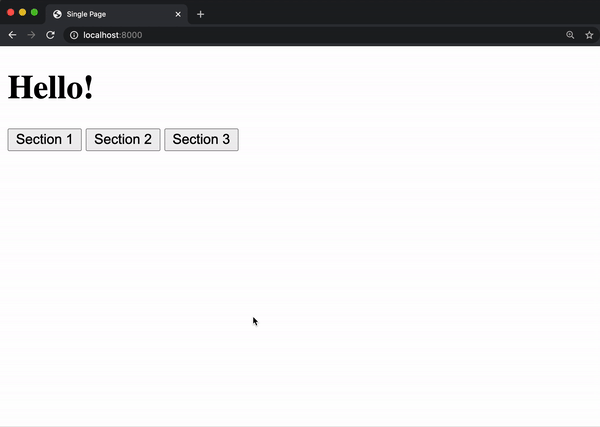
Now, we’ve created a site where we can load new data from a server without reloading our entire HTML page!
One disadvantage of our site though is that the URL is now less informative. You’ll notice in the video above that the URL remains the same even when we switch from section to section. We can solve this problem using the JavaScript History API. This API allows us to push information to our browser history and update the URL manually. Let’s take a look at how we can use this API. Imagine we have a Django project identical to the previous one, but this time we wish to alter our script to be employ the history API:
// When back arrow is clicked, show previous section
window.onpopstate = function(event) {
console.log(event.state.section);
showSection(event.state.section);
}
function showSection(section) {
fetch(`/sections/${section}`)
.then(response => response.text())
.then(text => {
console.log(text);
document.querySelector('#content').innerHTML = text;
});
}
document.addEventListener('DOMContentLoaded', function() {
document.querySelectorAll('button').forEach(button => {
button.onclick = function() {
const section = this.dataset.section;
// Add the current state to the history
history.pushState({section: section}, "", `section${section}`);
showSection(section);
};
});
});
In the showSection function above, we employ the history.pushState function. This function adds a new element to our browsing history based on three arguments:
- Any data associated with the state.
- A title parameter ignored by most web browsers
- What should be displayed in the URL
The other change we make in the above JavaScript is in setting the onpopstate parameter, which specifies what we should do when the user clicks the back arrow. In this case, we want to show the previous section when the button is pressed. Now, the site looks a little more user-friendly:
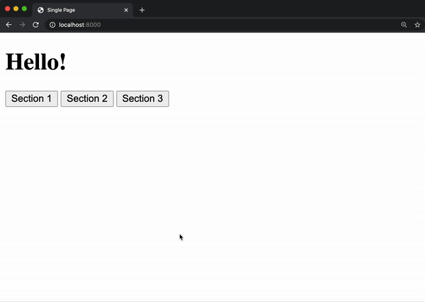
Scroll
In order to update and access the browser history, we used an important JavaScript object known as the window. There are some other properties of the window that we can use to make our sites look nicer:
-
window.innerWidth: Width of window in pixels -
window.innerHeight: Height of window in pixels
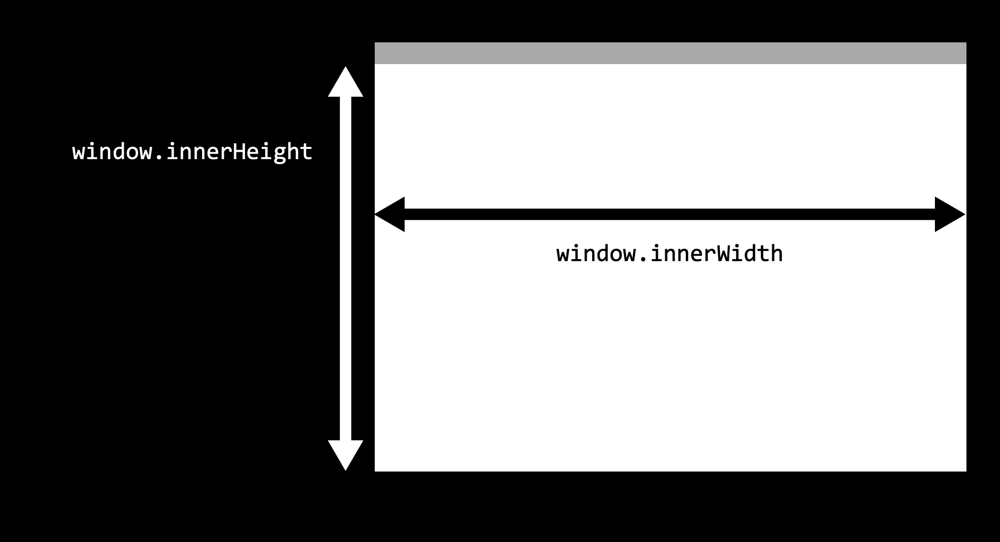
While the window represents what is currently visible to the user, the document refers to the entire web page, which is often much larger than the window, forcing the user to scroll up and down to see the page’s contents. To work with our scrolling, we have access to other variables:
-
window.scrollY: How many pixels we have scrolled from the top of the page -
document.body.offsetHeight: The height in pixels of the entire document.
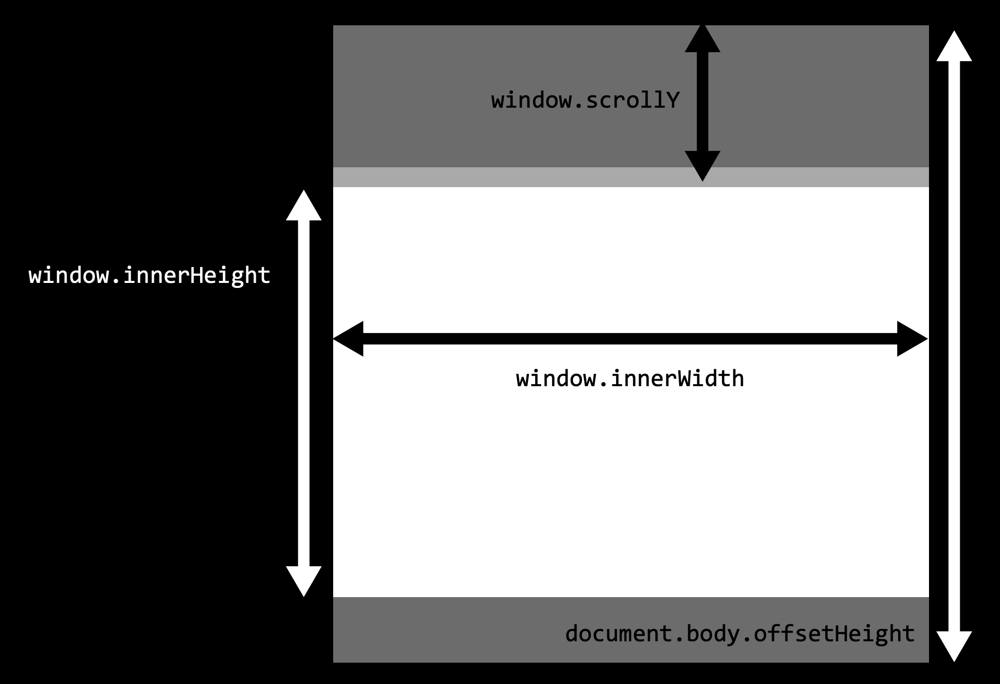
We can use these measures to determine whether or not the user has scrolled to the end of a page using the comparison window.scrollY + window.innerHeight >= document.body.offsetHeight. The following page, for example, will change the backgroud color to green when we reach the bottom of a page:
<!DOCTYPE html>
<html lang="en">
<head>
<title>Scroll</title>
<script>
// Event listener for scrolling
window.onscroll = () => {
// Check if we're at the bottom
if (window.innerHeight + window.scrollY >= document.body.offsetHeight) {
// Change color to green
document.querySelector('body').style.background = 'green';
} else {
// Change color to white
document.querySelector('body').style.background = 'white';
}
};
</script>
</head>
<body>
<p>1</p>
<p>2</p>
<!-- More paragraphs left out to save space -->
<p>99</p>
<p>100</p>
</body>
</html>
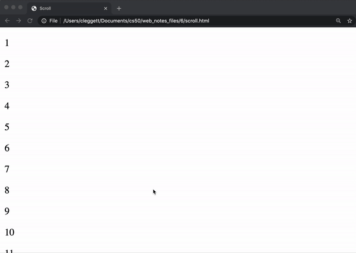
Infinite Scroll
Changing the background color at the end of the page probably isn’t all that useful, but we may want to detect that we’re at the end of the page if we want to implement infinite scroll. For example, if you’re on a social media site, you don’t want to have to load all posts at once, you might want to load the first ten, and then when the user reaches the bottom, load the next ten. Let’s take a look at a Django application that could do this. This app has two paths in urls.py
urlpatterns = [
path("", views.index, name="index"),
path("posts", views.posts, name="posts")
]
And two corresponding views in views.py:
import time
from django.http import JsonResponse
from django.shortcuts import render
# Create your views here.
def index(request):
return render(request, "posts/index.html")
def posts(request):
# Get start and end points
start = int(request.GET.get("start") or 0)
end = int(request.GET.get("end") or (start + 9))
# Generate list of posts
data = []
for i in range(start, end + 1):
data.append(f"Post #{i}")
# Artificially delay speed of response
time.sleep(1)
# Return list of posts
return JsonResponse({
"posts": data
})
Notice that the posts view requires two arguments: a start point and an end point. In this view, we’ve created our own API, which we can test out by visiting the url localhost:8000/posts?start=10&end=15, which returns the following JSON:
{
"posts": [
"Post #10",
"Post #11",
"Post #12",
"Post #13",
"Post #14",
"Post #15"
]
}
Now, in the index.html template that the site loads, we start out with only an empty div in the body and some styling. Notice that we load our static files at the beginning, and then we reference a JavaScript file within our static folder.
{% load static %}
<!DOCTYPE html>
<html>
<head>
<title>My Webpage</title>
<style>
.post {
background-color: #77dd11;
padding: 20px;
margin: 10px;
}
body {
padding-bottom: 50px;
}
</style>
<script scr="{% static 'posts/script.js' %}"></script>
</head>
<body>
<div id="posts">
</div>
</body>
</html>
Now with JavaScript, we’ll wait until a user scrolls to the end of the page and then load more posts using our API:
// Start with first post
let counter = 1;
// Load posts 20 at a time
const quantity = 20;
// When DOM loads, render the first 20 posts
document.addEventListener('DOMContentLoaded', load);
// If scrolled to bottom, load the next 20 posts
window.onscroll = () => {
if (window.innerHeight + window.scrollY >= document.body.offsetHeight) {
load();
}
};
// Load next set of posts
function load() {
// Set start and end post numbers, and update counter
const start = counter;
const end = start + quantity - 1;
counter = end + 1;
// Get new posts and add posts
fetch(`/posts?start=${start}&end=${end}`)
.then(response => response.json())
.then(data => {
data.posts.forEach(add_post);
})
};
// Add a new post with given contents to DOM
function add_post(contents) {
// Create new post
const post = document.createElement('div');
post.className = 'post';
post.innerHTML = contents;
// Add post to DOM
document.querySelector('#posts').append(post);
};
Now, we’ve created a site with infinite scroll!
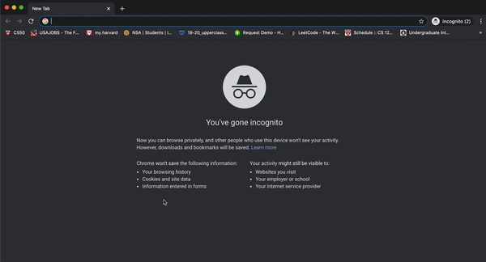
Animation
Another way we can make our sites a bit more interesting is by adding some animation to them. It turns out that in addition to providing styling, CSS makes it easy for us to animate HTML elements.
To create an animation in CSS, we use the format below, where the animation specifics can include starting and ending styles (to and from) or styles at different stages in the duration (anywhere from 0% to 100%). For example:
@keyframes animation_name {
from {
/* Some styling for the start */
}
to {
/* Some styling for the end */
}
}
or:
@keyframes animation_name {
0% {
/* Some styling for the start */
}
75% {
/* Some styling after 3/4 of animation */
}
100% {
/* Some styling for the end */
}
}
Then, to apply an animation to an element, we include the animation-name, the animation-duration (in seconds), and the animation-fill-mode (typically forwards). For example, here’s a page where a title grows when we first enter the page:
<!DOCTYPE html>
<html lang="en">
<head>
<title>Animate</title>
<style>
@keyframes grow {
from {
font-size: 20px;
}
to {
font-size: 100px;
}
}
h1 {
animation-name: grow;
animation-duration: 2s;
animation-fill-mode: forwards;
}
</style>
</head>
<body>
<h1>Welcome!</h1>
</body>
</html>
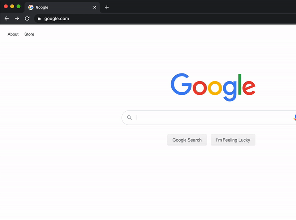
We can do more than just manipulate size: the below example shows how we can change the position of a heading just by changing a few lines:
<!DOCTYPE html>
<html lang="en">
<head>
<title>Animate</title>
<style>
@keyframes move {
from {
left: 0%;
}
to {
left: 50%;
}
}
h1 {
position: relative;
animation-name: move;
animation-duration: 2s;
animation-fill-mode: forwards;
}
</style>
</head>
<body>
<h1>Welcome!</h1>
</body>
</html>
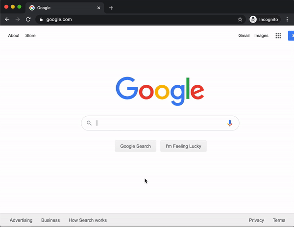
Now, let’s look at setting some intermediate CSS properties as well. We can specify the style at any percentage of the way through an animation. In the below example we’ll move the title from left to right, and then back to left by altering only the animation from above
@keyframes move {
0% {
left: 0%;
}
50% {
left: 50%;
}
100% {
left: 0%;
}
}
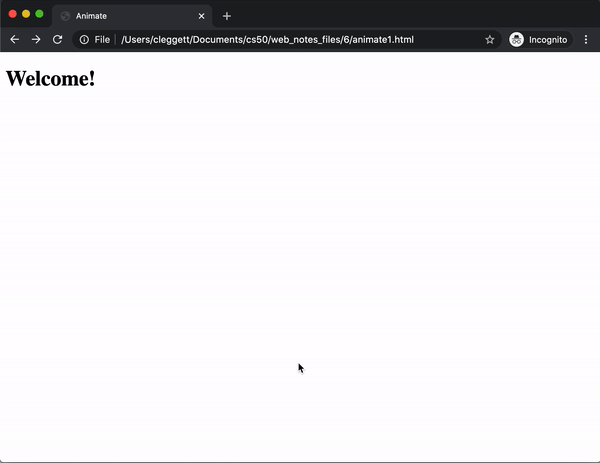
If we want to repeat an animation multiple times, we can change the animation-iteration-count to a number higher than one (or even infinite for endless animation). There are many animation properties that we can set in order to change different aspects of our animation.
In addition to CSS, we can use JavaScript to further control our animations. Let’s use our moving header example (with infinite repetition) to show how we can create a button that starts and stops the animation. Assuming we already have an animation, button, and heading, we can add the following script to start and pause the animation:
document.addEventListener('DOMContentLoaded', function() {
// Find heading
const h1 = document.querySelector('h1');
// Pause Animation by default
h1.style.animationPlayState = 'paused';
// Wait for button to be clicked
document.querySelector('button').onclick = () => {
// If animation is currently paused, begin playing it
if (h1.style.animationPlayState == 'paused') {
h1.style.animationPlayState = 'running';
}
// Otherwise, pause the animation
else {
h1.style.animationPlayState = 'paused';
}
}
})
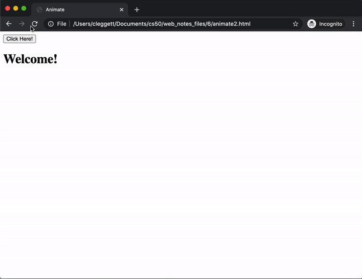
Now, let’s look at how we can apply our new knowledge of animations to the posts page we made earlier. Specifically, let’s say we want the ability to hide posts once we’re done reading them. Let’s imagine a Django project identical to the one we just created, but with some slightly different HTML and JavaScript. The first change we’ll make is to the add_post function, this time also adding a button to the right side of the post:
// Add a new post with given contents to DOM
function add_post(contents) {
// Create new post
const post = document.createElement('div');
post.className = 'post';
post.innerHTML = `${contents} <button class="hide">Hide</button>`;
// Add post to DOM
document.querySelector('#posts').append(post);
};
Now, we’ll work on hiding a post when the hide button is clicked. To do this, we’ll add an event listener that is triggered whenever a user clicks anywhere on the page. We then write a function that takes in the event as an argument, which is useful because we can use the event.target attribute to access what was clicked on. We can also use the parentElement class to find the parent of a given element in the DOM.
// If hide button is clicked, delete the post
document.addEventListener('click', event => {
// Find what was clicked on
const element = event.target;
// Check if the user clicked on a hide button
if (element.className === 'hide') {
element.parentElement.remove()
}
});
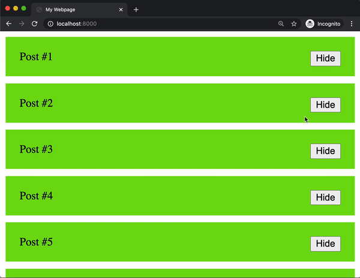
We can now see that we’ve implemented the hide button, but it doesn’t look as nice as it possible could. Maybe we want to have the post fade away and shrink before we remove it. In order to do this, we’ll first create a CSS animation. The animation below will spend 75% of its time changing the opacity from 1 to 0, which esentially makes the post fade out slowly. It then spends the rest of the time moving all of its height-related attributes to 0, effectively shrinking the post to nothing.
@keyframes hide {
0% {
opacity: 1;
height: 100%;
line-height: 100%;
padding: 20px;
margin-bottom: 10px;
}
75% {
opacity: 0;
height: 100%;
line-height: 100%;
padding: 20px;
margin-bottom: 10px;
}
100% {
opacity: 0;
height: 0px;
line-height: 0px;
padding: 0px;
margin-bottom: 0px;
}
}
Next, we would add this animation to our post’s CSS. Notice that we initially set the animation-play-state to paused, meaning the post will not be hidden by default.
.post {
background-color: #77dd11;
padding: 20px;
margin-bottom: 10px;
animation-name: hide;
animation-duration: 2s;
animation-fill-mode: forwards;
animation-play-state: paused;
}
Finally, we want to be able to start the animation once the hide button has been clicked, and then remove the post. We can do this by editing our JavaScript from above:
// If hide button is clicked, delete the post
document.addEventListener('click', event => {
// Find what was clicked on
const element = event.target;
// Check if the user clicked on a hide button
if (element.className === 'hide') {
element.parentElement.style.animationPlayState = 'running';
element.parentElement.addEventListener('animationend', () => {
element.parentElement.remove();
});
}
});
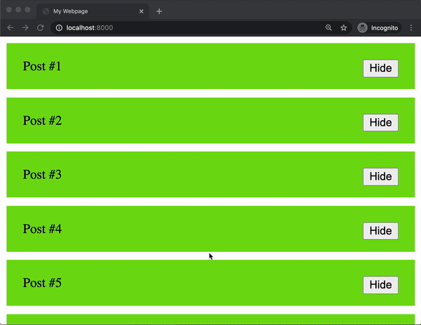
As you can see above, the hide functionality now looks a lot nicer!
React
At this point, you can imagine how much JavaScript code would have to go into a more complicated website. We can mitigate how much code we actually need to write by employing a JavaScript framework, just as we employed Bootstrap as a CSS framework to cut down on the amount of CSS we actually had to write. One of the most popular JavaScript frameworks is a library called React.
So far in this course, we’ve been using imperative programming methods, where we give the computer a set of statements to execute. For example, to update the counter in an HTML page we might have have code that looks like this:
View:
<h1>0</h1>
Logic:
let num = parseInt(document.querySelector("h1").innerHTML);
num += 1;
document.querySelector("h1").innerHTML = num;
React allows us to use declarative programming, which will allow us to simply write code explaining what we wish to display and not worry about how we’re displaying it. In React, a counter might look a bit more like this:
View:
<h1>{num}</h1>
Logic:
num += 1;
The React framework is built around the idea of components, each of which can have an underlying state. A component would be something you can see on a web page like a post or a navigation bar, and a state is a set of variables associated with that component. The beauty of React is that when the state changes, React will automatically change the DOM accordingly.
There are a number of ways to use React, (including the popular create-react-app command published by Facebook) but today we’ll focus on getting started directly in an HTML file. To do this, we’ll have to import three JavaScript Packages:
-
React: Defines components and their behavior -
ReactDOM: Takes React components and inserts them into the DOM -
Babel: Translates from JSX, the language in which we’ll write in React, to plain JavaScript that our browsers can interpret. JSX is very similar to JavaScript, but with some additional features, including the ability to represent HTML inside of our code.
Let’s dive in and create our first React application!
<!DOCTYPE html>
<html lang="en">
<head>
<script src="https://unpkg.com/react@17/umd/react.production.min.js" crossorigin></script>
<script src="https://unpkg.com/react-dom@17/umd/react-dom.production.min.js" crossorigin></script>
<script src="https://unpkg.com/babel-standalone@6/babel.min.js"></script>
<title>Hello</title>
</head>
<body>
<div id="app"></div>
<script type="text/babel">
function App() {
return (
<div>
Hello!
</div>
);
}
ReactDOM.render(<App />, document.querySelector("#app"));
</script>
</body>
</html>
Since this is our first React app, let’s take a detailed look at what each part of this code is doing:
- In the three lines above the title, we import the latest versions of React, ReactDOM, and Babel.
- In the body, we include a single
divwith anidofapp. We almost always want to leave this empty, and fill it in our react code below. - We include a script tag where we specify that
type="text/babel". This signals to the browser that the following script needs to be translated using Babel. - Next, we create a component called
App. Components in React can be represented by JavaScript functions. - Our component returns what we would like to render to the DOM. In this case, we simply return
<div>Hello!</div>. - The last line of our script employs the
ReactDOM.renderfunction, which takes two arguments:- A component to render
- An element in the DOM inside of which the component should be rendered
Now that we understand what the code is doing, we can take a look at the resulting webpage:
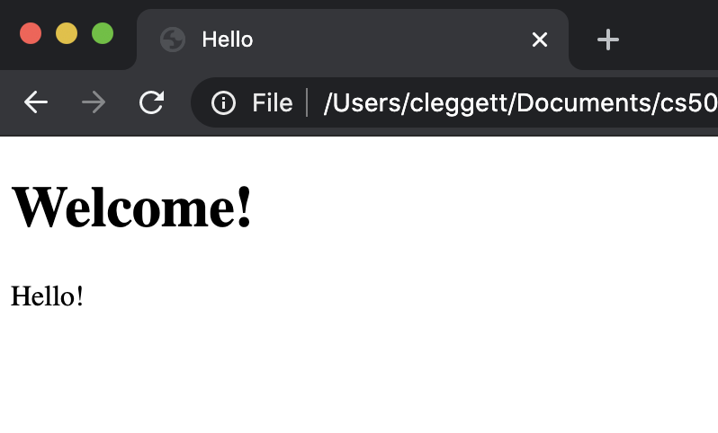
One useful feature of React is the ability to render components within other components. To demonstrate this, let’s create another component called Hello:
function Hello(props) {
return (
<h1>Hello</h1>
);
}
And now, let’s render three Hello components inside of our App component:
function App() {
return (
<div>
<Hello />
<Hello />
<Hello />
</div>
);
}
This gives us a page that looks like:
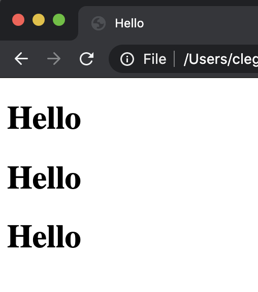
So far, the components haven’t been all that interesting, as they are all exactly the same. We can make these components more flexible by adding additional properties (props in React terms) to them. For example, let’s say we wish to say hello to three different people. We can provide those people’s names in a method that looks similar to HTML attributes:
function App() {
return (
<div>
<Hello name="Harry" />
<Hello name="Ron" />
<Hello name="Hermione" />
</div>
);
}
We can then access those props using props.PROP_NAME. We can then insert this into our JSX using curly braces:
function Hello(props) {
return (
<h1>Hello, {props.name}!</h1>
);
}
Now, our page displays the three names!
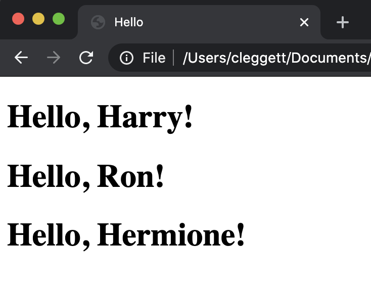
Now, let’s see how we can use React to re-implement the counter page we built when first working with JavaScript. Our overall structure will remain the same, but inside of our App component, we’ll use React’s useState hook to add state to our component. The argument to useState is the initial value of the state, which we’ll set to 0. The function returns both a variable representing the state and a function that allows us to update the state.
const [count, setCount] = React.useState(0);
Now, we can work on what the function will render, where we’ll specify a header and a button. We’ll also add an event listener for when the button is clicked, which React handles using the onClick attribute:
return (
<div>
<h1>{count}</h1>
<button onClick={updateCount}>Count</button>
</div>
);
Finally, let’s define the updateCount function. To do this, we’ll use the setCount function, which can take as argument a new value for the state.
function updateCount() {
setCount(count + 1);
}
Now we have a functioning counter site!
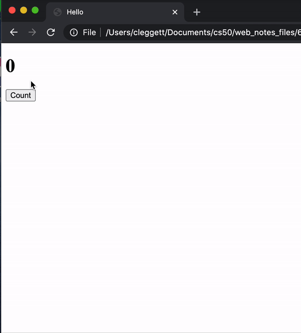
Addition
Now that we have a feel for the React framework, let’s work on using what we’ve learned to build a game-like site where users will solve addition problems. We’ll begin by creating a new file with the same setup as our other React pages. To start building this application, let’s think about what we might want to keep track of in the state. We should include anything that we think might change while a user is on our page. Our state might include:
-
num1: The first number to be added -
num2: The second number to be added -
response: What the user has typed in -
score: How many questions the user has answered correctly.
Now, our state can be a JavaScript object that includes all of this information:
const [state, setState] = React.useState({
num1: 1,
num2: 1,
response: "",
score: 0
});
Now, using the values in the state, we can render a basic user interface.
return (
<div>
<div>{state.num1} + {state.num2}</div>
<input value={state.response} />
<div>Score: {state.score}</div>
</div>
);
Now, the basic layout of the site looks like this:
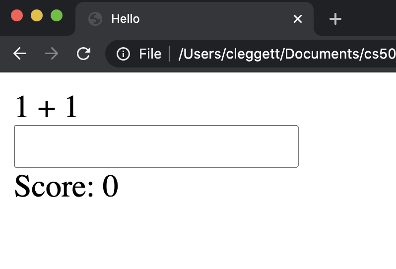
At this point, the user cannot type anything in the input box because its value is fixed as state.response which is currently the empty string. To fix this, let’s add an onChange attribute to the input element, and set it equal to a function called updateResponse
onChange={updateResponse}
Now, we’ll have to define the updateResposne function, which takes in the event that triggered the function, and sets the response to the current value of the input. This function allows the user to type, and stores whatever has been typed in the state.
function updateResponse(event) {
setState({
...state,
response: event.target.value
});
}
Now, let’s add the ability for a user to submit a problem. We’ll first add another event listener and link it to a function we’ll write next:
onKeyPress={inputKeyPress}
Now, we’ll define the inputKeyPress function. In this function, we’ll first check whether the Enter key was pressed, and then check to see if the answer is correct. When the user is correct, we want to increase the score by 1, choose random numbers for the next problem, and clear the response. If the answer is incorrect, we want to decrease the score by 1 and clear the response.
function inputKeyPress(event) {
if (event.key === "Enter") {
const answer = parseInt(state.response);
if (answer === state.num1 + state.num2) {
// User got question right
setState({
...state,
score: state.score + 1,
response: "",
num1: Math.ceil(Math.random() * 10),
num2: Math.ceil(Math.random() * 10)
});
} else {
// User got question wrong
setState({
...state,
score: state.score - 1,
response: ""
})
}
}
}
To put some finishing touches on the application, let’s add some style to the page. We’ll center everything in the app, and then make the problem larger by adding an id of problem to the div containing the problem, and then adding the following CSS to a style tag:
#app {
text-align: center;
font-family: sans-serif;
}
#problem {
font-size: 72px;
}
Finally, let’s add the ability to win the game after gaining 10 points. To do this, we’ll add a condition to the render funciton, returning something completely different once we have 10 points:
if (state.score === 10) {
return (
<div id="winner">You won!</div>
);
}
To make the win more exciting, we’ll add some style to the alternative div as well:
#winner {
font-size: 72px;
color: green;
}
Now, let’s take a look at our application!
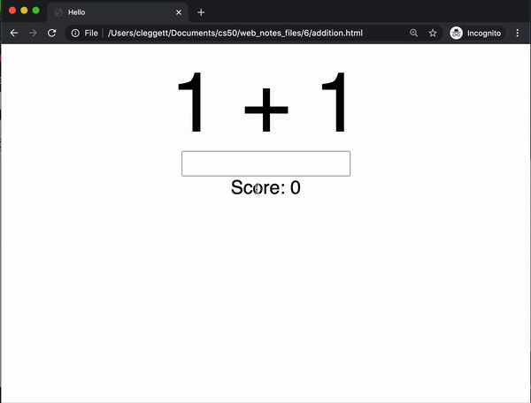
That’s all for lecture today! Next time, we’ll talk about some best practices for building larger web applications.